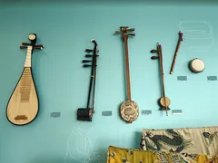

非遗图鉴 / 市井评话
05
非遗图鉴 · 曲艺
市井评话
曲艺 · 145 项、213 子项 · 第 2 / 3 页（Ⅴ-61 至 Ⅴ-120）
每一条只列名录上的事实：编号、名称、申报地区或单位、公布年份和批次。详情看中国非物质文化遗产网的官方页。在名录检索里查这一门类 →
- Ⅴ-61
- Ⅴ-62
襄垣鼓书
- 山西省襄垣县2008 第二批 · 新增项目官方页 →
- Ⅴ-63
萍乡春锣
- 江西省萍乡市2008 第二批 · 新增项目官方页 →
- Ⅴ-64
- Ⅴ-65
莺歌柳书
- 山东省菏泽市2008 第二批 · 新增项目官方页 →
- Ⅴ-66
平湖钹子书
- 浙江省平湖市2008 第二批 · 新增项目官方页 →
- Ⅴ-67
- Ⅴ-68
- Ⅴ-69
大调曲子
- 河南省南阳市2008 第二批 · 新增项目官方页 →
- Ⅴ-70
湖北小曲
- 湖北省武汉市2008 第二批 · 新增项目官方页 →
- Ⅴ-71
南曲
- 湖北省五峰土家族自治县2008 第二批 · 新增项目官方页 →
- Ⅴ-72
秦安小曲
- 甘肃省秦安县2008 第二批 · 新增项目官方页 →
- Ⅴ-73
徐州琴书
- 江苏省徐州市2008 第二批 · 新增项目官方页 →
- Ⅴ-74
恩施扬琴
- 湖北省恩施市2008 第二批 · 新增项目官方页 →
- Ⅴ-75
- Ⅴ-76
- Ⅴ-77
- Ⅴ-78
- Ⅴ-79
- Ⅴ-80
朝鲜族三老人
- 吉林省和龙市2008 第二批 · 新增项目官方页 →
- Ⅴ-81
南京白局
- 江苏省南京市秦淮区2008 第二批 · 新增项目官方页 →
- Ⅴ-82
武林调
- 浙江省杭州市2008 第二批 · 新增项目官方页 →
- Ⅴ-83
绍兴宣卷
- 浙江省绍兴县2008 第二批 · 新增项目官方页 →
- Ⅴ-84
- Ⅴ-85
- Ⅴ-86
- Ⅴ-87
广西文场
- 广西壮族自治区桂林市2008 第二批 · 新增项目官方页 →
- Ⅴ-88
车灯
- 重庆市曲艺团2008 第二批 · 新增项目官方页 →
- Ⅴ-89
眉户曲子
- 陕西省户县2008 第二批 · 新增项目官方页 →
- Ⅴ-90
韩城秧歌
- 陕西省韩城市2008 第二批 · 新增项目官方页 →
- Ⅴ-91
- Ⅴ-92
青海平弦
- 青海省西宁市2008 第二批 · 新增项目官方页 →
- Ⅴ-93
青海越弦
- 青海省西宁市2008 第二批 · 新增项目官方页 →
- Ⅴ-94
青海下弦
- 青海省2008 第二批 · 新增项目官方页 →
- Ⅴ-95
好来宝
- 内蒙古自治区科尔沁左翼后旗2008 第二批 · 新增项目官方页 →
- Ⅴ-96
哈萨克族铁尔麦
- 新疆维吾尔自治区伊犁哈萨克自治州2008 第二批 · 新增项目官方页 →
- Ⅴ-97
莲花落
- 山西省太原市2011 第三批 · 新增项目官方页 →

Shaoxing lianhualao instruments in the Xiaoshan Cultural Center图：Yumeto / CC BY-SA 4.0 / 维基共享资源。本站已缩放裁切，按 CC BY-SA 4.0 同样许可共享。 - Ⅴ-98
长子鼓书
- 山西省长子县2011 第三批 · 新增项目官方页 →
- Ⅴ-99
翼城琴书
- 山西省翼城县2011 第三批 · 新增项目官方页 →
- Ⅴ-100
曲沃琴书
- 山西省曲沃县2011 第三批 · 新增项目官方页 →
- Ⅴ-101
泽州四弦书
- 山西省泽州县2011 第三批 · 新增项目官方页 →
- Ⅴ-102
- Ⅴ-103
永康鼓词
- 浙江省永康市2011 第三批 · 新增项目官方页 →
- Ⅴ-104
唱新闻
- 浙江省象山县2011 第三批 · 新增项目官方页 →
- Ⅴ-105
渔鼓道情
- 安徽省萧县2011 第三批 · 新增项目官方页 →
- Ⅴ-106
三棒鼓
- 湖北省宣恩县2011 第三批 · 新增项目官方页 →
- Ⅴ-107
祁阳小调
- 湖南省祁阳县2011 第三批 · 新增项目官方页 →
- Ⅴ-108
粤曲
- 广东省广州市2011 第三批 · 新增项目官方页 →
- Ⅴ-109
木鱼歌
- 广东省东莞市2011 第三批 · 新增项目官方页 →
- Ⅴ-110
四川评书
- 重庆市曲艺团2011 第三批 · 新增项目官方页 →
- Ⅴ-111
洛南静板书
- 陕西省洛南县2011 第三批 · 新增项目官方页 →
- Ⅴ-112
南音说唱
- 澳门特别行政区2011 第三批 · 新增项目官方页 →
- Ⅴ-113
河州平弦
- 甘肃省临夏市2011 第三批 · 新增项目官方页 →
- Ⅴ-114
- Ⅴ-115
数来宝
- 北京市东城区2014 第四批 · 新增项目官方页 →
- Ⅴ-116
梅花大鼓
- 天津市2014 第四批 · 新增项目官方页 →
- Ⅴ-117
弹唱
- 山西省吕梁市离石区2014 第四批 · 新增项目官方页 →
- Ⅴ-118
浦东宣卷
- 上海市浦东新区2014 第四批 · 新增项目官方页 →
- Ⅴ-119
丽水鼓词
- 浙江省丽水市莲都区2014 第四批 · 新增项目官方页 →
- Ⅴ-120
客家古文
- 江西省于都县2014 第四批 · 新增项目官方页 →